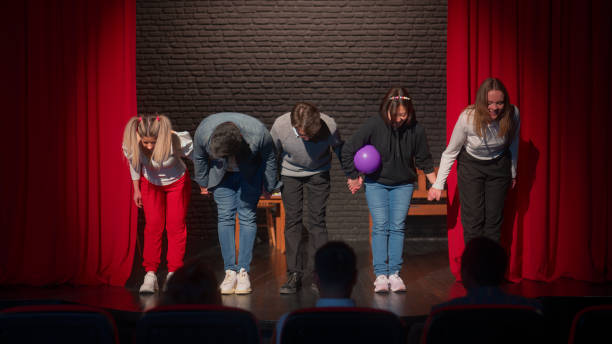
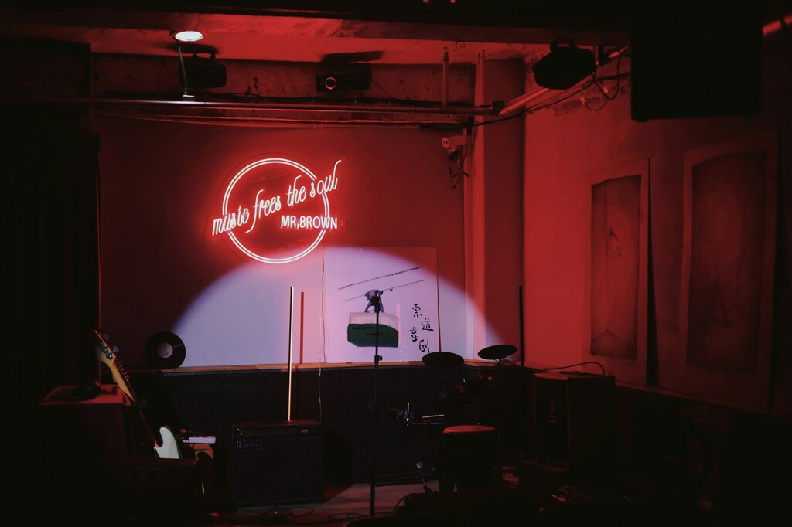

Improvisational Comedy
Rexburg Comedy has multiple opportunities for those who want to learn more about the art of comedy. Our primary focus is on improvisational comedy. Improvisational comedy, or improv for short, is a form where comedic scenes are thought of completely on the spot. Ideas and suggestions are taken from audience members and are then performed by the players. Rather than a script or sketch, improv is played through a variety of different “games”. These games are split into multiple different categories, ranging from games where a player must guess something that is unknown to them through hints from other players to musical games where players must sing a made-up song on the spot with accompaniment.
Sketch Comedy
Sketch comedy is another form that we strive to teach and perform. Unlike improv, sketch comedy is written by a group of writers, then performed by players. Sketch comedy is like the likes of ‘Studio C’ and ‘Saturday Night Live.’ It requires regular rehearsing and staging. Sketch comedy utilizes sets, props, and costumes, all of which are not common in improv or standup comedy.
Standup Comedy
Standup comedy is our third and final form of comedy we teach. Most people are familiar with standup comedy, it has been a staple of comedy both live and televised over the years. It consists of one performer on stage performing a pre-written “set” consisting of jokes and stories. It is a form of comedy that is reliant on the sole performer, but our workshops are a useful tool in learning techniques on how to better write and perform a standup set.